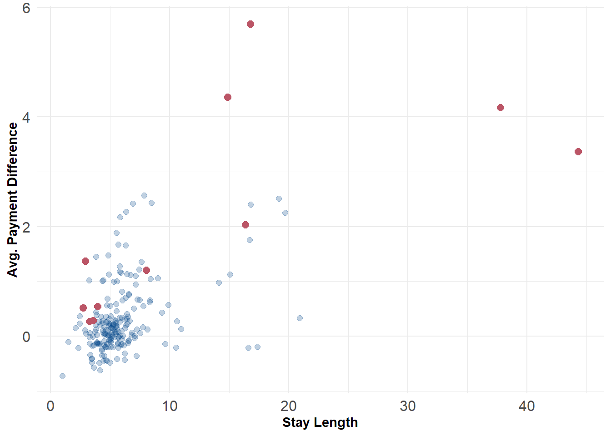

Code
# scale input attributes
X <- df[, 2:7]
X <- scale(X)
# compute NN distance between all points
# set n neighbors
k = 5
# compute k nearest neighbor distances
# using kd-trees
d <- RANN::nn2(X, k = k+1)
d <- d[[2]][,1:k+1]Part 2: K-nearest neighbors anomaly detector
Gio Circo, Ph.D.
April 25, 2023
This is the second part of a 3-part series. In the previous post I talked a bit about my desire to work on building the pieces of an outlier ensemble from “scratch” (e.g. mostly base R code with some helpers). In the first post I talked about my approach building a principal components analysis anomaly detector. In this post I’ll work on the K-nearest neighbors anomaly detector using the same base data.
To date, the three parts of the ensemble contain:
In a way, the K-nearest neighbors anomaly detector is incredibly simple. To compute the anomalousness of a single point we measure its distance to its \(k\) nearest neighbors. We then use either the maximum or average distance among those \(k\) points as its anomaly score. However, there is some additional complexity here regarding the choice of \(k\) in an unsupervised setting - but we’ll get to that in a moment.
One issue is that computing all pairs of nearest neighbors has \(O(N^2)\) time complexity. However, we only need to know the number of nearest neighbors up to our value of \(k\). Therefore, we can avoid computing nearest unnecessary distances by applying more efficient algorithms - like k-d trees. In the case for \(k\) nearest neighbors the time complexity is \(O(N * log(N)\). The RANN package in R does this fairly efficiently. We’ll use the same data as in the previous post for this example.
You will notice that we set \(k\) to \(k+1\) to avoid calculating the nearest-neighbor distance to the each point itself (which is always zero). The nn2 package gives us the Euclidean nearest-neighbor distances for each point arranged from nearest to farthest. For example if we look at the top 3 rows of the distance matrix we see:
[,1] [,2] [,3] [,4] [,5]
[1,] 0.1457822 0.3123632 0.3311984 0.3641609 0.3726815
[2,] 0.5261689 0.6887312 0.9636189 1.0087124 1.0097114
[3,] 0.2874466 0.3044159 0.3723676 0.4139428 0.4251863Which gives us the standardized (Z-score) distance to the \(k\) nearest neighbor of point \(i\). Now all we need to do is decide on how we will summarize this distance.
We have a few options for distance measures
scored_data <- data.frame(df,anom_mean)
flag <- scored_data$anom_mean >= quantile(scored_data$anom_mean, .95)
ggplot() +
geom_point(data = scored_data, aes(x = stay_len, y = diff), color = '#004488', size = 2, alpha = .25) +
geom_point(data = scored_data[flag,], aes(x = stay_len, y = diff), color = '#BB5566', size = 2.5) +
labs(x = "Stay Length", y = "Avg. Payment Difference") +
theme_minimal() +
theme(axis.text = element_text(size = 12),
axis.title = element_text(face = "bold"))
Here’s a minimal working example of the procedure above. As we build our ensemble, we’ll come back to this function later.
# Run a principal components anomaly detector
adKNN <- function(X, k = 5, method = 'max'){
# compute k nearest neighbor distances
# using kd-trees
d <- RANN::nn2(X, k = k+1)
d <- d[[2]][,1:k+1]
# aggregate scores
if(method == 'max')
anom <- apply(d, 1, max)
else if(method == 'mean')
anom <- apply(d, 1, mean)
else
print("Function not found")
return(anom)
}